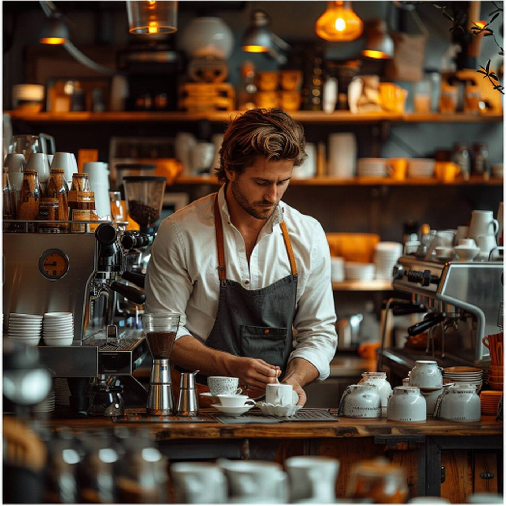
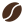

CASA DO EVENTO
Sabores do café brasileiro

Participar do Workshop de Métodos foi uma experiência incrível. Aprendi na prática como cada técnica influencia no sabor e saí de lá preparando meu café com muito mais confiança.
A Noite do Café Especial superou minhas expectativas. Foi uma verdadeira imersão sensorial, com aromas e sabores que eu nunca tinha experimentado antes.
O curso de Barista foi transformador. A equipe da Casa do Barista é extremamente atenciosa e domina o assunto. Hoje preparo cafés com técnica e paixão.
A combinação de música ao vivo com cafés especiais criou um ambiente acolhedor e sofisticado. Uma experiência perfeita para relaxar e apreciar bons momentos.
O atendimento é impecável e o cuidado na escolha dos grãos faz toda diferença. Cada evento da Casa do Barista é único e marcante.